Dieser Bereich umfasst wiederkehrende Abläufe rund um die Ambulanz, von der Vorbereitung bis zur Nachbereitung.
Wählen Sie, ob es sich um Kontrollpatienten oder neue Patienten handelt:
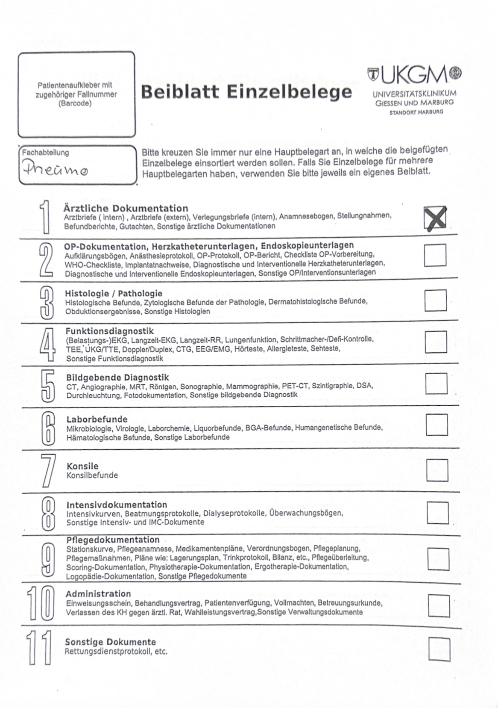
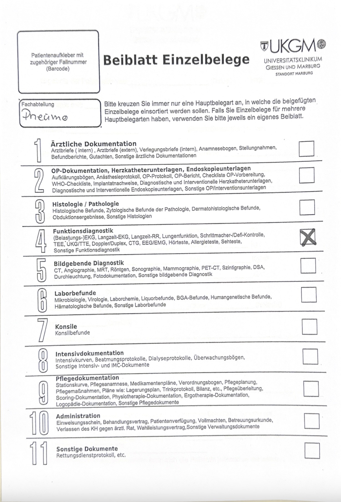
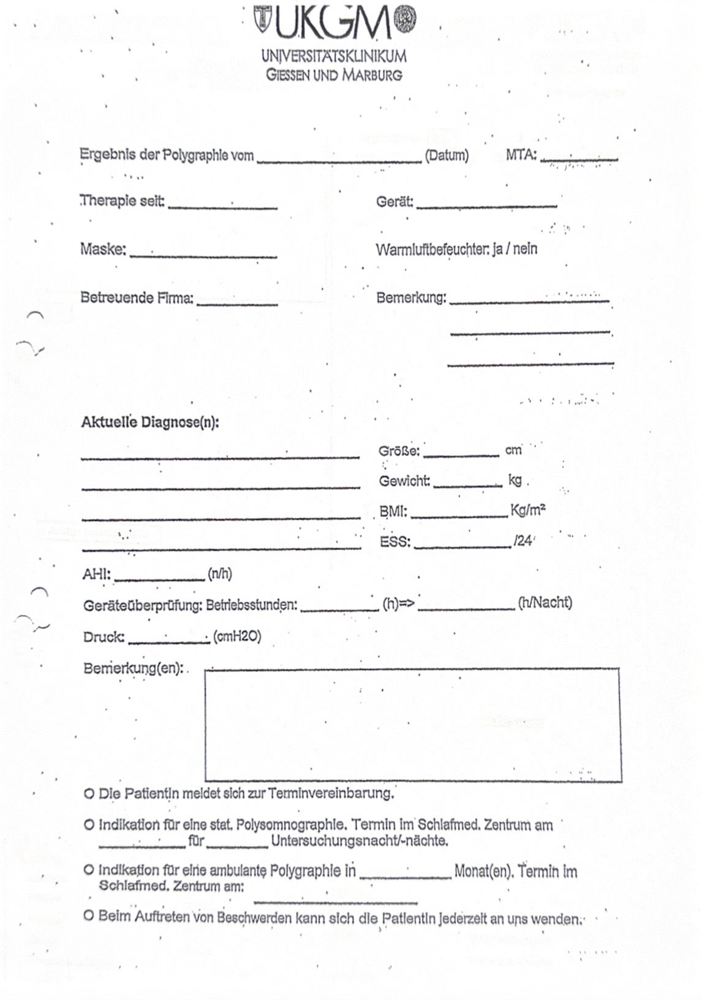
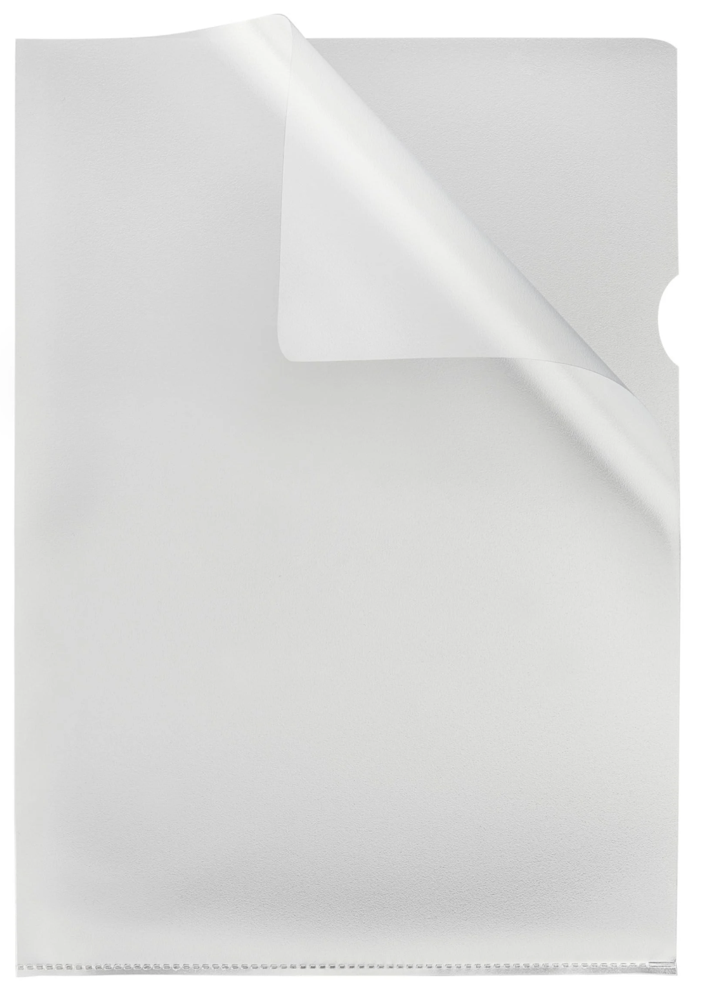
Die Farben auf der Tages- bzw. Vortagesliste helfen dabei, den Ablauf der Patient:innen schnell zu erkennen. Die folgende Darstellung ist anonymisiert und dient nur als Beispiel.
| Farbe | Zeit | Patient/Beschreibung | Termin / Ort | Bedeutung für den Ablauf |
|---|---|---|---|---|
| 10:23 | Patient:in A – NEU MP4 | Kabine 25 → Schlaflabor +2 | Neupatient:in: zuerst Sprechstunde, danach Gerät abholen. | |
| 10:24 | Patient:in B – NEU MP4, MIS und Befunde in Kabine 25 | Kabine 25 → Schlaflabor +2 | Neue Unterlagen und Befunde für Kabine 25 bereitlegen. | |
| 10:23 | Patient:in C – direkt Schlaflabor +2 | Schlaflabor +2 | Kontrollpatient:in, keine Vorbesprechung in Kabine 25. | |
| 10:24 | Patient:in D – direkt Schlaflabor +2 | Schlaflabor +2 | Gerät abholen oder zurückbringen. | |
| 11:13 | Patient:in E – PG-Gespräch | 9:30 Uhr PG-Gespräch | Sonderfall: Hinweis beachten und ggf. Rücksprache halten. | |
| 11:30 | Patient:in F – PG-Gespräch | 10:00 Uhr PG-Gespräch | Sonderfall: Hinweis beachten und ggf. Rücksprache halten. | |
| — | Handschriftliche Ergänzung | z. B. Reihenfolge / Telefonnummer / Bemerkung | Notiz prüfen und bei Unklarheit nachfragen. |
Führen Sie diese Schritte jeweils zu Beginn der Woche durch:
Dieser Bereich enthält Anleitungen zur Patientendatenverwaltung in Orbis und MS Access sowie zur Terminvergabe für verschiedene Untersuchungs- und Kontrollformen.
In diesem Abschnitt wird beschrieben, wie der Einstieg in ORBIS erfolgt und welcher Bereich für die administrativen Abläufe im Schlaflabor ausgewählt wird.
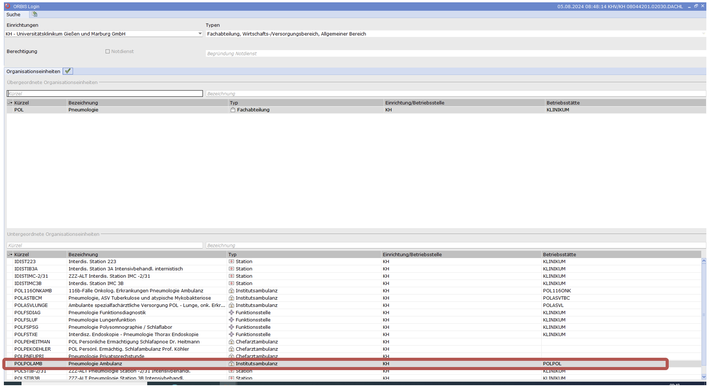
In diesem Abschnitt wird die Terminvergabe für neue ambulante Patienten sowie für CPAP-Kontrollen beschrieben.
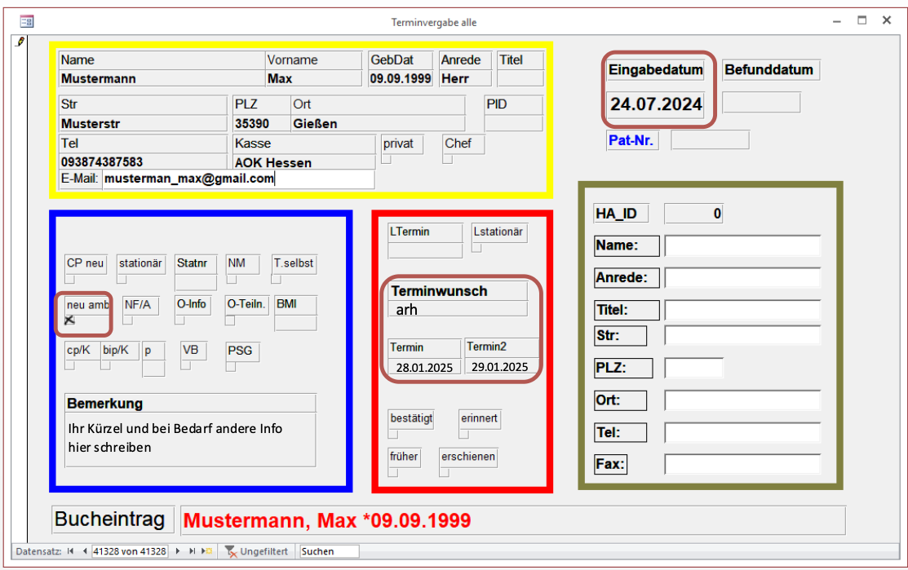
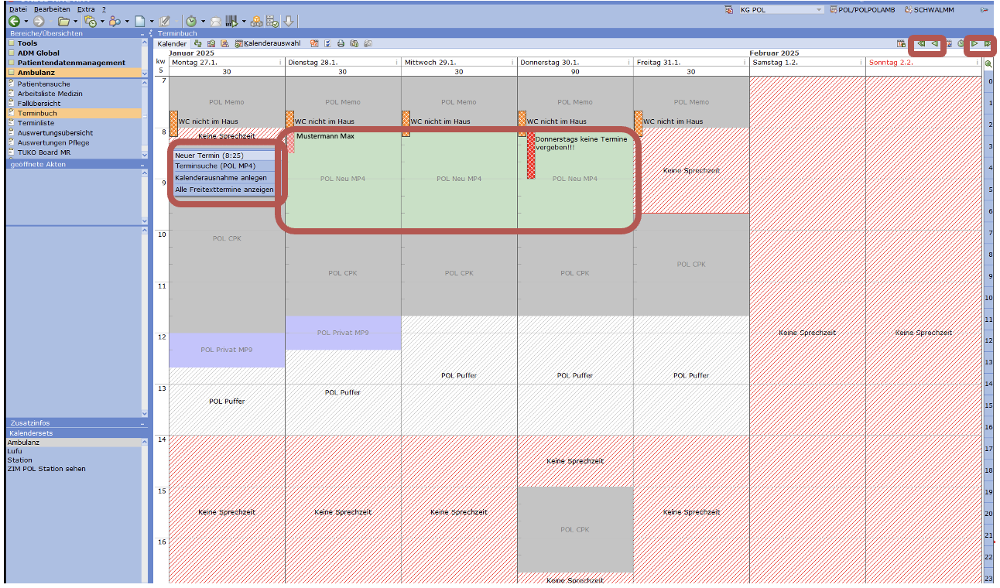
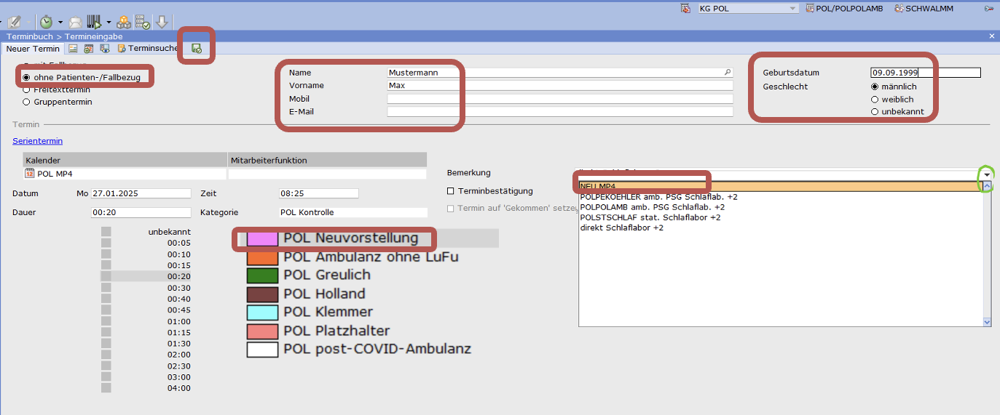
In diesem Abschnitt wird die Terminvergabe für CPAP-Kontrollen mithilfe von MS Access und ORBIS beschrieben.
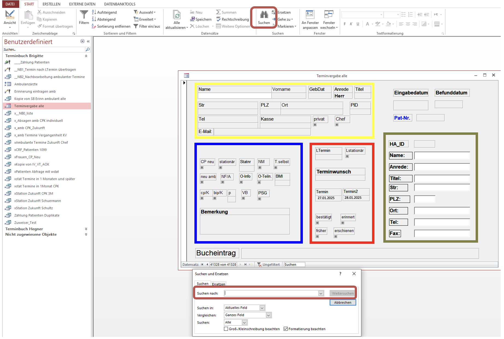
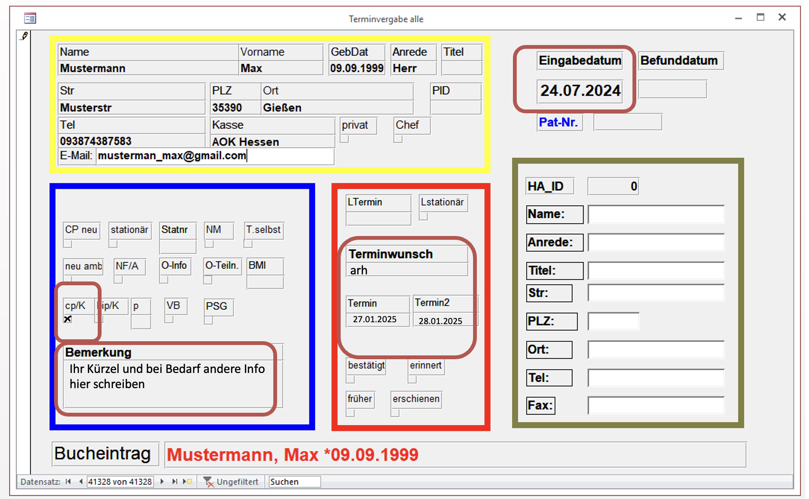
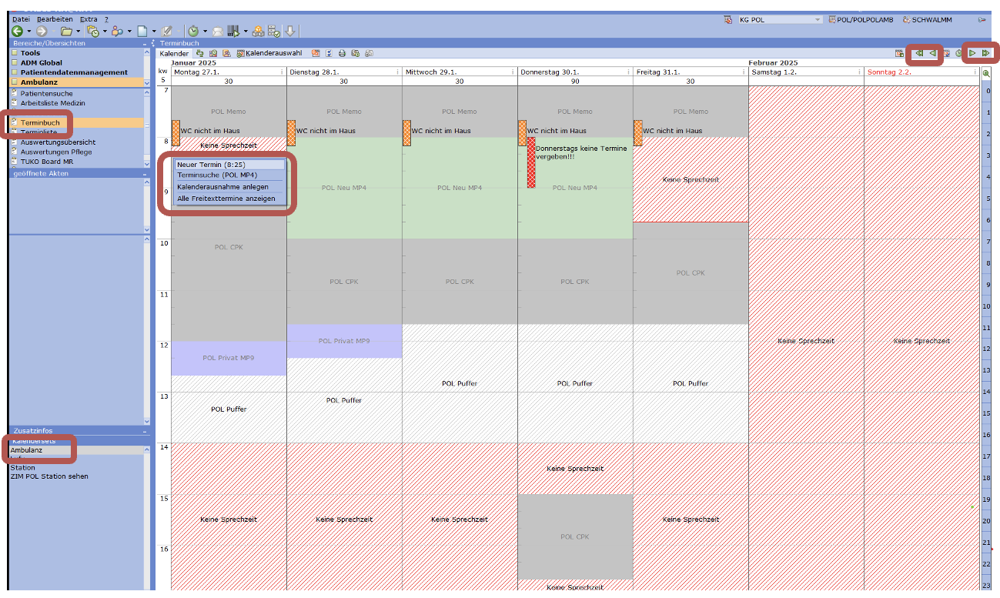
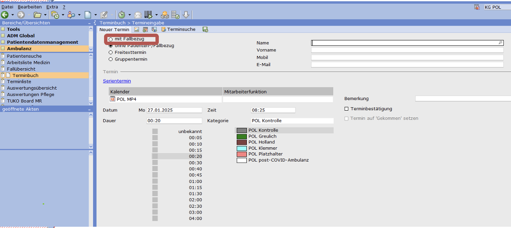
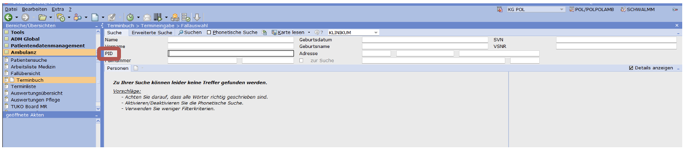
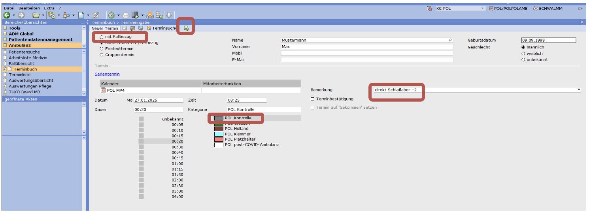
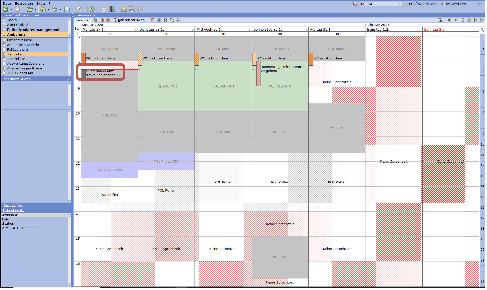
In diesem Abschnitt wird die Terminbestätigung beschrieben.
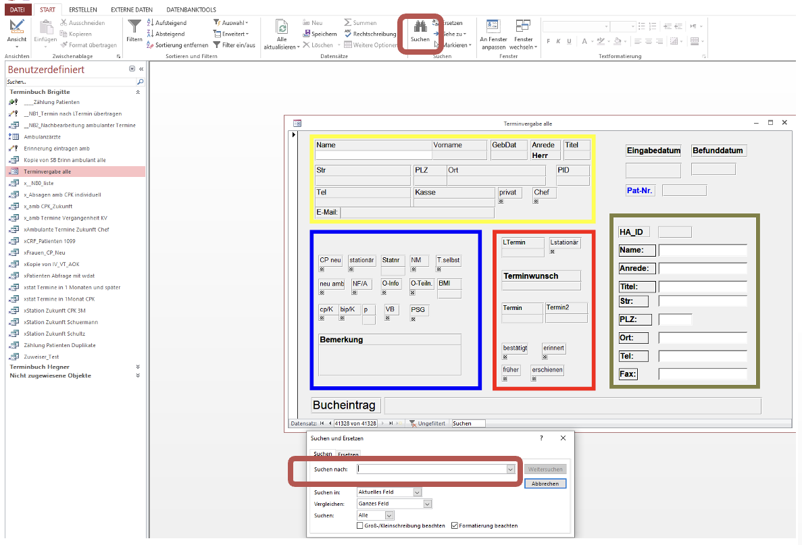
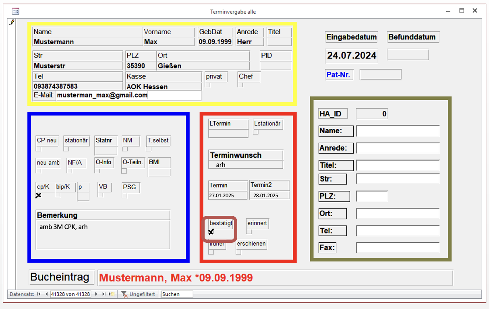
Dieser Bereich bündelt organisatorische Tätigkeiten im Büro, die Materialversorgung sowie den Versand von Unterlagen.
Das Einsammeln und Sortieren der Akten erfolgt vor allem nach der Sprechstunde. Durch den digitalen Ablauf (PG-Befund direkt im System) ist nur noch wenig Aktenablage im Archiv nötig.
Holen Sie die benötigten Unterlagen von Ebene +2 herunter. Da der PG-Befund direkt im System hinterlegt wird, entfällt das frühere Kopieren der Akten.
Nur wenige Akten müssen noch ins Archiv. Legen Sie diese sortiert an der vorgesehenen Stelle ab; der Großteil wird nicht mehr archiviert.
Kontrollieren Sie regelmäßig, ob folgende Materialien im Büro ausreichend vorhanden sind. Falls etwas fehlt, holen Sie Nachschub im Raum Versorgung AWT.
Holen Sie die von Ihrer Kollegin fertig geschriebenen und ausgedruckten Arztbriefe ab.
Wählen Sie je nach Seitenanzahl den passenden Umschlag:
Falten Sie die Briefe entsprechend und legen Sie sie in den ausgewählten Umschlag. Achten Sie darauf, dass Adressfeld und Absender korrekt sichtbar sind.
Sammeln Sie alle fertigen Umschläge und bringen Sie die Briefe anschließend zur Poststelle im Gebäude.
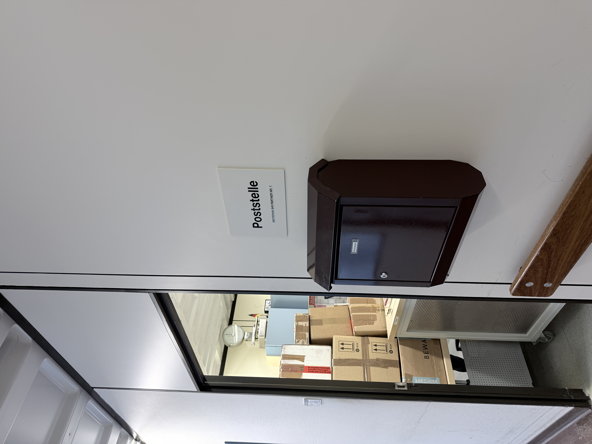
Dieser Bereich ergänzt den Leitfaden um interaktive Checklisten und typische Problemsituationen im Arbeitsalltag.
Diese Checkliste orientiert sich an den täglichen Aufgaben vor, während und nach der Sprechstunde.
| Problem | Mögliche Lösung | Wann Rücksprache? |
|---|---|---|
| Patient:in ist im System nicht auffindbar | Schreibweise, Geburtsdatum und vorhandene Patientennummer prüfen. | Wenn trotz Prüfung kein eindeutiger Datensatz gefunden wird. |
| Termin überschneidet sich | Kalender erneut prüfen und alternative freie Termine suchen. | Wenn keine passende Kapazität vorhanden ist. |
| Unterlagen sind unvollständig | Fehlende Dokumente notieren und zuständige Person informieren. | Bei medizinisch relevanten oder dringenden Unterlagen. |
| Arztbrief oder Befund fehlt | Ablage, Postkorb und zuständigen Arbeitsplatz prüfen. | Wenn der Befund für einen aktuellen Termin benötigt wird. |
| Unsicherheit bei Patientendaten | Daten nicht eigenständig verändern, sondern Rücksprache halten. | Immer, wenn Patientendaten nicht eindeutig sind. |
Dieser Bereich dient als schnelle Orientierungshilfe bei organisatorischen Rückfragen. Bei Unsicherheiten sollte zunächst Rücksprache mit erfahrenen Kolleg:innen oder dem Sekretariat gehalten werden.
| Bereich | Kontakt / Durchwahl | Wann kontaktieren? |
|---|---|---|
| Sekretariat / Anmeldung | 06421 / 58 65405 | Terminfragen, organisatorische Rückfragen oder Unklarheiten im Arbeitsablauf |